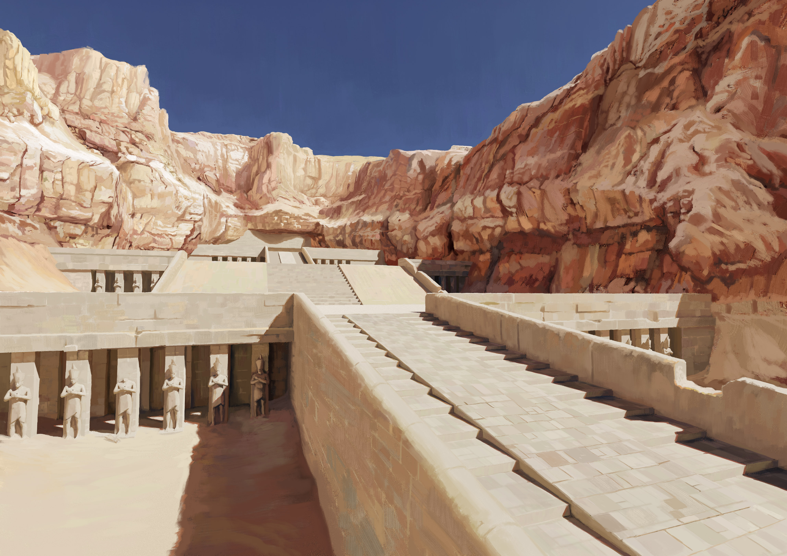
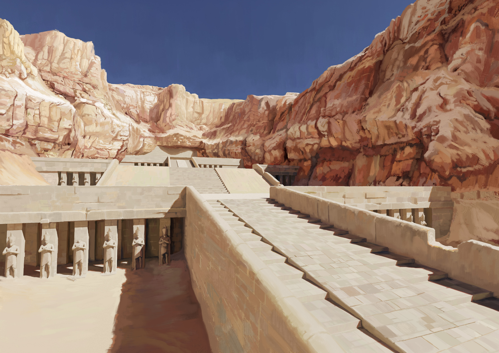
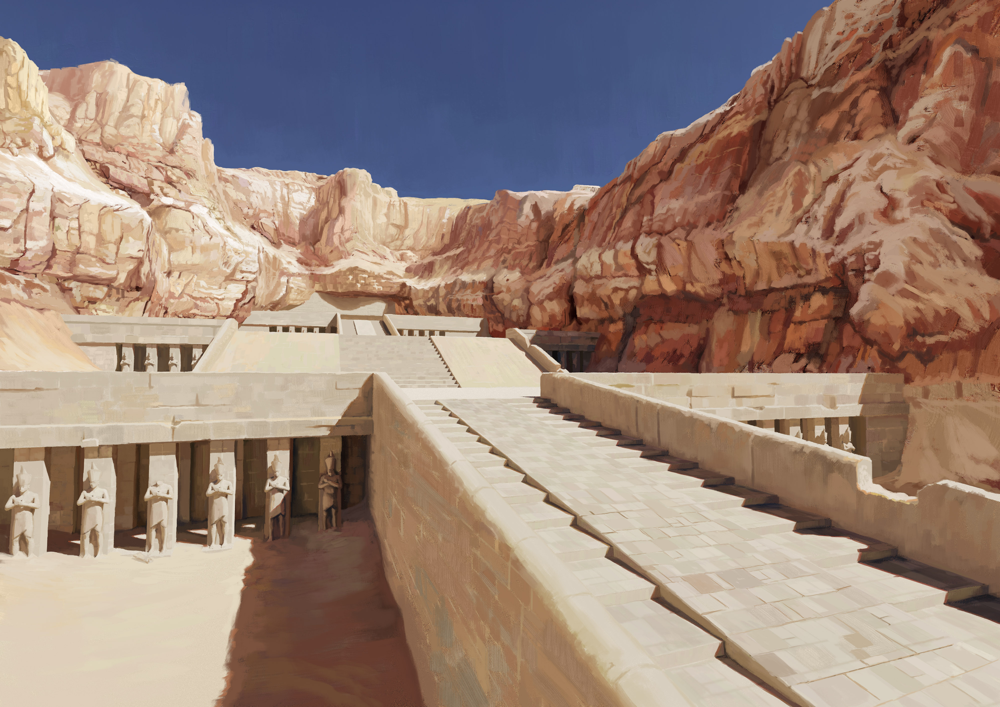

Art of Ludovico Tellatin
fantasy illustrator | game designer
×
I'm a 28 years old fantasy artist.
I create illustrations for ttrpgs and games.
I'm the author of
Records of Eashes: Tamiri
, an egyptian inspired adventure for D&D 5th edition
Where you can find me
instagram
twitter



 
